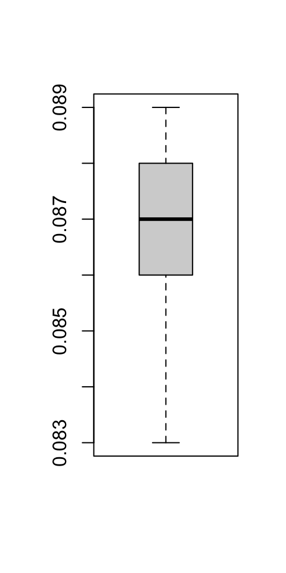
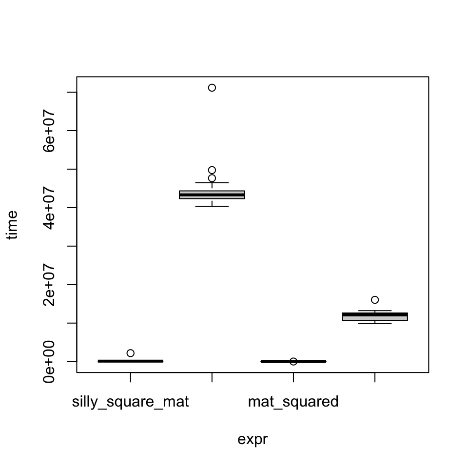
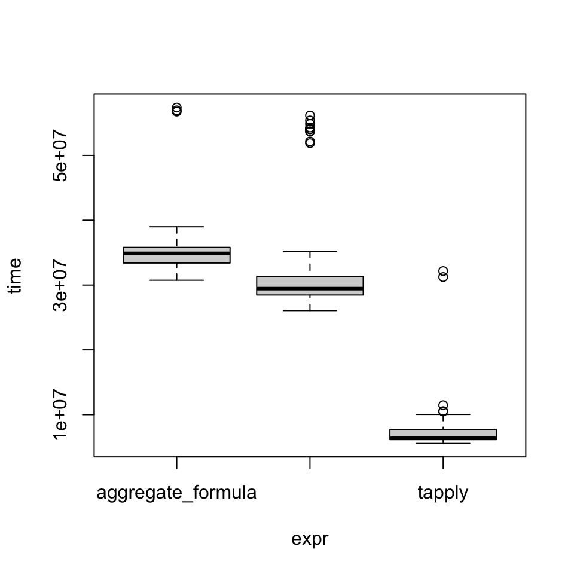
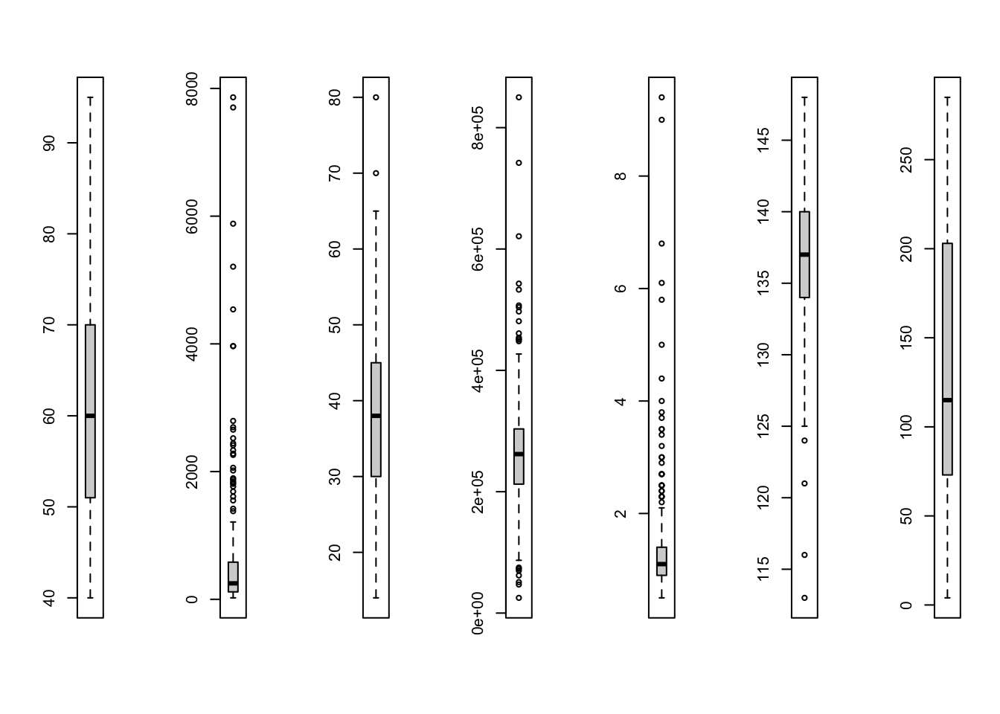

55 Benchmarking & Profiling
Benchmarking is the process of timing the execution of code for the purpose of comparison. For example, you can compare the execution time of a program in two different systems, e.g. a laptop and a high performance server. Another common case is to compare the performance of two different programs that produce the same output on the same computer.
Profiling refers to timing the different steps of a program to identify bottlenecks and potential targets for optimization.
55.1 system.time(): Time the execution of an expression
The base package’s system.time() function allows you to measure the execution time of an R expression.
system.time(rnorm(9999999)) user system elapsed
0.305 0.007 0.312 “elapsed” time is real time in seconds.
“user” and “system” are time used by the CPU on different types of tasks (see ?proc.time).
As always, you can pass any R expression within curly brackets:
x <- rnorm(9999)
system.time({
for (i in 2:9999) {
x[i]
x[i] <- x[i]^3
}
}) user system elapsed
0.002 0.000 0.002 You can use replicate() to get a measure of time over multiple executions and average it:
boxplot(fit.glm_time10)
55.2 Compare execution times with microbenchmark::microbenchmark()
The microbenchmark package’s microbenchmark() function allows you to time the execution of multiple expressions with sub-millisecond accuracy. It will execute each command a number of times as defined by the times argument (default = 100), and output statistics of execution time per expression in nanoseconds. Using plot() on the output produces a boxplot comparing the time distributions.
# install.packages("microbenchmark")
library(microbenchmark)55.2.1 Example: loop over matrix vs. data.frame
Let’s create xmat, a 500 by 5 matrix and, xdf a data.frame with the same data.
set.seed(2021)
xmat <- matrix(rnorm(500 * 5), nrow = 5)
xdf <- as.data.frame(xmat)If you wanted to square either of them, you would just use ^2. Here, we create a function specifically to demonstrate the difference in working on a numeric matrix vs. a data.frame by using a nested loop that replaces each element one at a time.
mat_df_sq <- microbenchmark(
silly_square_mat = silly_square(xmat),
silly_square_df = silly_square(xdf),
mat_squared = xmat^2,
df_squared = xdf^2
)Warning in microbenchmark(silly_square_mat = silly_square(xmat),
silly_square_df = silly_square(xdf), : less accurate nanosecond times to avoid
potential integer overflowsclass(mat_df_sq)[1] "microbenchmark" "data.frame" Print microbenchmark’s output:
mat_df_sqUnit: microseconds
expr min lq mean median uq
silly_square_mat 107.543 111.7865 135.07614 114.431 117.6905
silly_square_df 40335.472 42334.3655 43649.35645 43320.272 44353.2875
mat_squared 1.107 1.8655 3.05122 2.911 3.6900
df_squared 9875.793 10685.0305 11735.24427 12122.388 12624.4945
max neval
2190.753 100
71158.042 100
15.990 100
16040.963 100Notice how a) either operation is much faster on a matrix vs. a data.frame and b) vectorized squaring with ^2 is much faster than the nested loop as expected.
There is a plot() method for microbenchmark objects:
plot(mat_df_sq)
55.2.2 Example: Group means
Let’s perform a simple mean-by-group operation and compare three different approaches. As an example, we use the flights dataset from the nycflights13 package which includes data on 336,776 flights that departed from NY area airports in 2013. The data comes as a tibble, and we create data.frame and data.table versions.th
library(dplyr)
library(nycflights13)
library(data.table)
options(datatable.print.class = TRUE)
class(flights)[1] "tbl_df" "tbl" "data.frame"dim(flights)[1] 336776 19flights_df <- as.data.frame(flights)
flights_dt <- as.data.table(flights)Compare performance of the same operation using different functions:
- base R
aggregate()with formula input - base R
aggregate()with list input - base R
tapply()
flights_aggregate_formula <- function() {
aggregate(arr_delay ~ carrier,
data = flights_df,
mean, na.rm = TRUE)
}
flights_aggregate <- function() {
aggregate(flights_df$arr_delay,
by = list(flights_df$carrier),
mean, na.rm = TRUE)
}
flights_tapply <- function() {
tapply(flights_df$arr_delay,
flights_df$carrier,
mean, na.rm = TRUE)
}
groupmean_3x <- microbenchmark(
aggregate_formula = flights_aggregate_formula(),
aggregate = flights_aggregate(),
tapply = flights_tapply()
)groupmean_3xUnit: milliseconds
expr min lq mean median uq max neval
aggregate_formula 49.984125 56.19456 59.13615 57.88038 60.38195 97.78959 100
aggregate 43.398500 46.89822 49.91139 48.52676 50.61108 86.17450 100
tapply 9.478421 10.48790 11.85747 10.71896 11.61592 50.03513 100plot(groupmean_3x)
55.3 Profile a function with profvis()
The profvis package’s profvis() function provides an interactive output to visualize the time spent in different calls within a program.
library(profvis)
profvis({
hf <- read.csv("https://archive.ics.uci.edu/ml/machine-learning-databases/00519/heart_failure_clinical_records_dataset.csv")
str(hf)
lt5 <- which(sapply(hf, \(i) length(unique(i))) < 5)
for (i in lt5) hf[, i] <- factor(hf[, i])
index_numeric <- which(sapply(hf, is.numeric))
par(mfrow = c(1, length(index_numeric)))
for (i in index_numeric) boxplot(hf[, i])
par(mfrow = c(1, 1))
})'data.frame': 299 obs. of 13 variables:
$ age : num 75 55 65 50 65 90 75 60 65 80 ...
$ anaemia : int 0 0 0 1 1 1 1 1 0 1 ...
$ creatinine_phosphokinase: int 582 7861 146 111 160 47 246 315 157 123 ...
$ diabetes : int 0 0 0 0 1 0 0 1 0 0 ...
$ ejection_fraction : int 20 38 20 20 20 40 15 60 65 35 ...
$ high_blood_pressure : int 1 0 0 0 0 1 0 0 0 1 ...
$ platelets : num 265000 263358 162000 210000 327000 ...
$ serum_creatinine : num 1.9 1.1 1.3 1.9 2.7 2.1 1.2 1.1 1.5 9.4 ...
$ serum_sodium : int 130 136 129 137 116 132 137 131 138 133 ...
$ sex : int 1 1 1 1 0 1 1 1 0 1 ...
$ smoking : int 0 0 1 0 0 1 0 1 0 1 ...
$ time : int 4 6 7 7 8 8 10 10 10 10 ...
$ DEATH_EVENT : int 1 1 1 1 1 1 1 1 1 1 ...